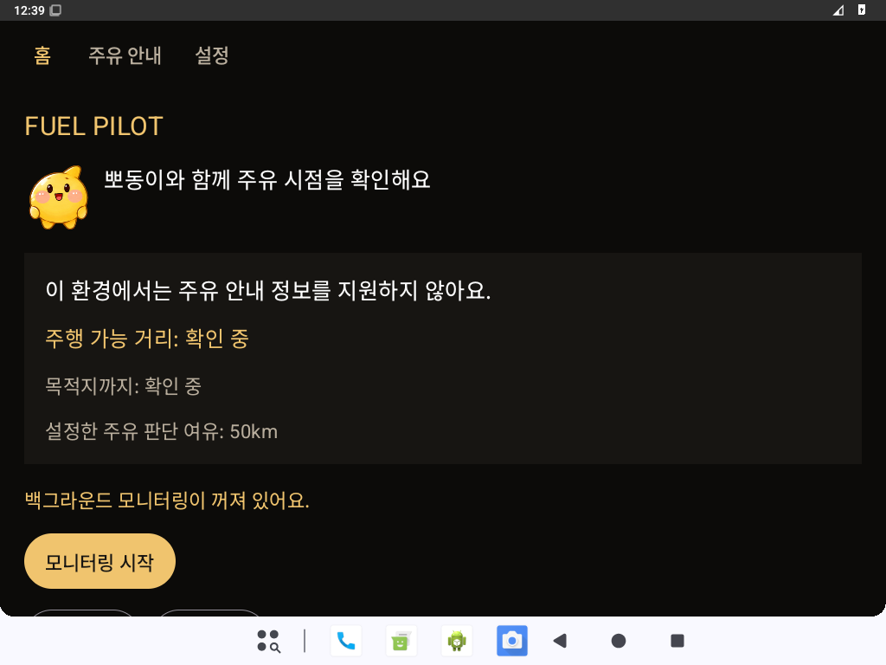
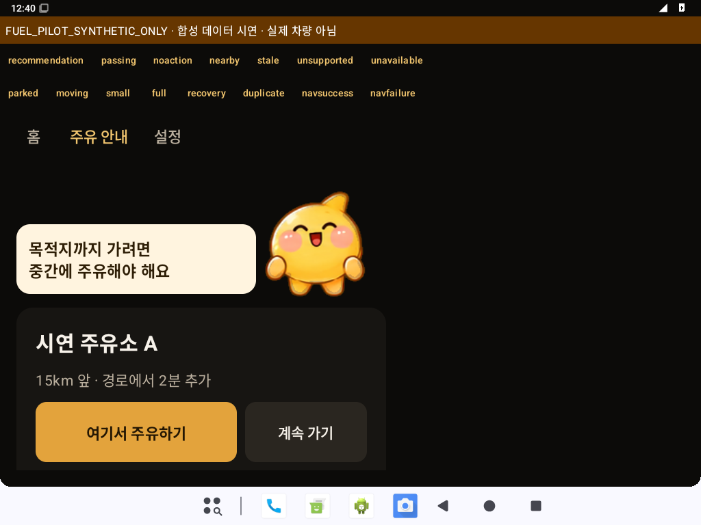
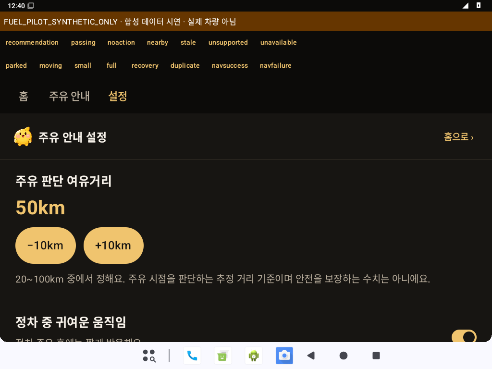

FUEL PILOT · CURRENT UI
지금까지 만든 화면을
한곳에서 확인하세요.
왼쪽에서 상황을 고르면 실제 웹 UI와 뽀동이 모션이 재생됩니다. 아래에는 Android 35에서 검증한 네이티브 화면을 함께 정리했습니다.
- 11
- 라이브 상황
- 72
- 애니메이션 프레임
- 3
- 네이티브 캡처
DEMO DATA 미리보기의 거리·연료·주유소 값은 UI 확인용 예시이며 운영 기본값이 아닙니다.
02
네이티브 앱 검증 기준
Android 35 · 1024×768에서 확인한 11/11 기준 화면 · 최신 시각 보정은 재빌드 후 교체 예정

실제 데이터 미연결 상태를 솔직하게 표시하고 설정·시연 진입점을 제공합니다.

승인된 캐릭터, 문구, 버튼 우선순위를 Compose 화면에서 확인한 모습입니다.

연료 여유거리와 모션 선호를 정차 상태에서만 안전하게 변경합니다.
03
화면 흐름
추천에서 내비 연결, 주유 완료까지의 기본 경험
- 01필요성 안내
왜 지금 주유해야 하는지 먼저 설명
- 02주유소 선택
도달 가능성과 우회 시간을 비교
- 03내비 응답
성공 응답 뒤에만 경유지 추가 완료
- 04차분한 주행
주행 중에는 작은 아바타로 축소
- 05한 번의 인사
검증된 주유 이벤트에만 one-shot 반응